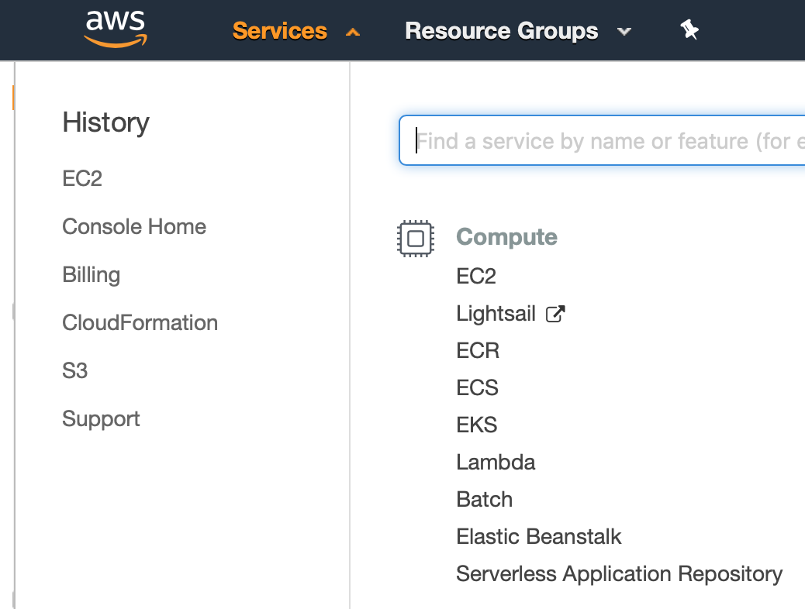
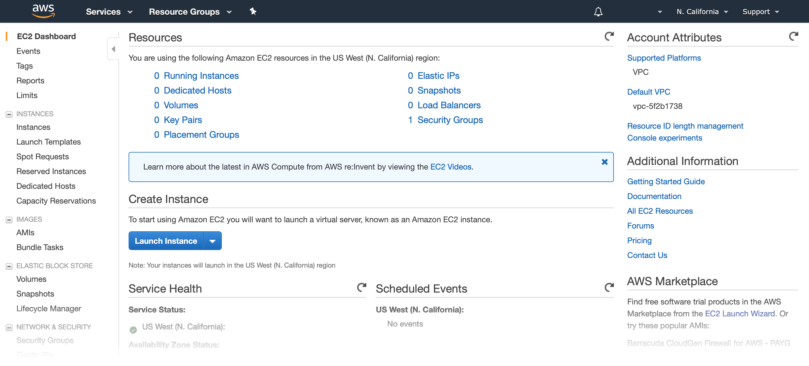
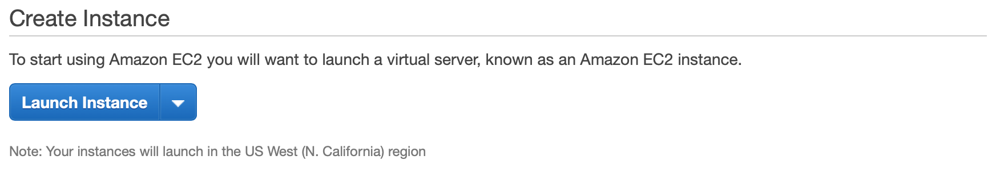
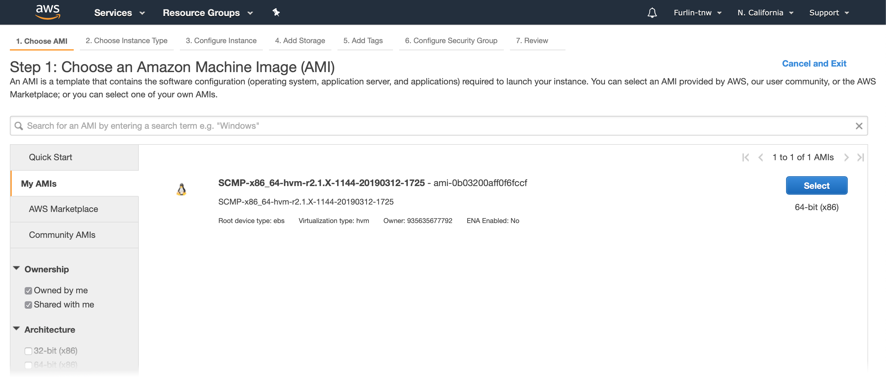
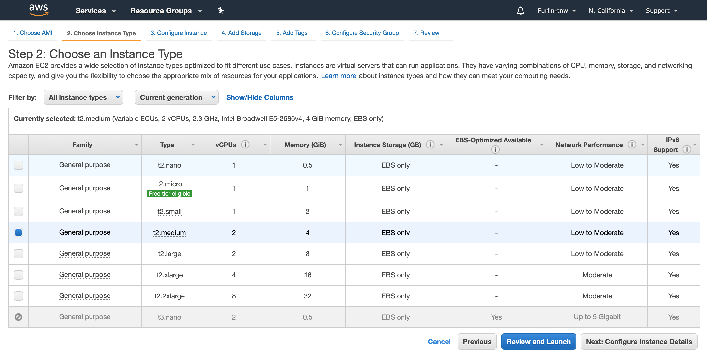
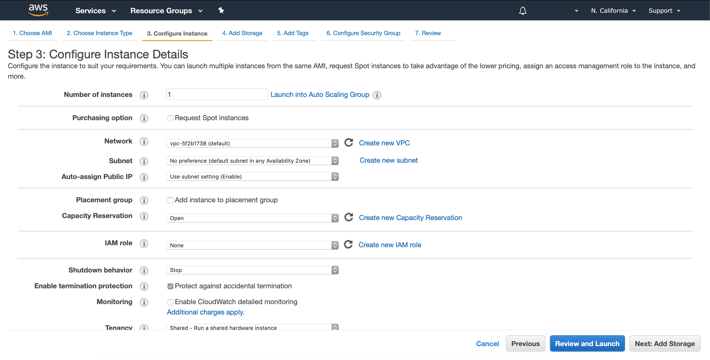
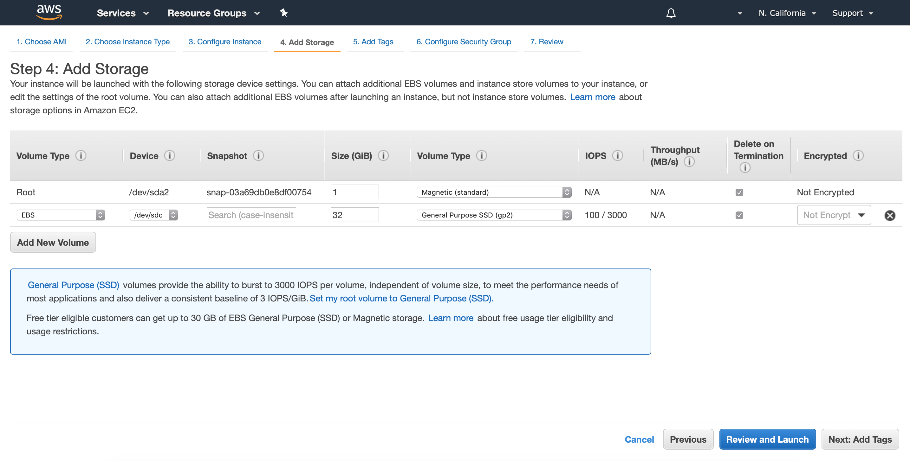
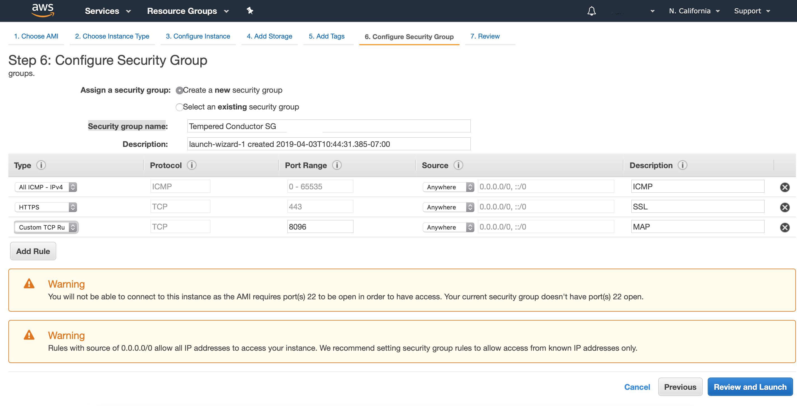
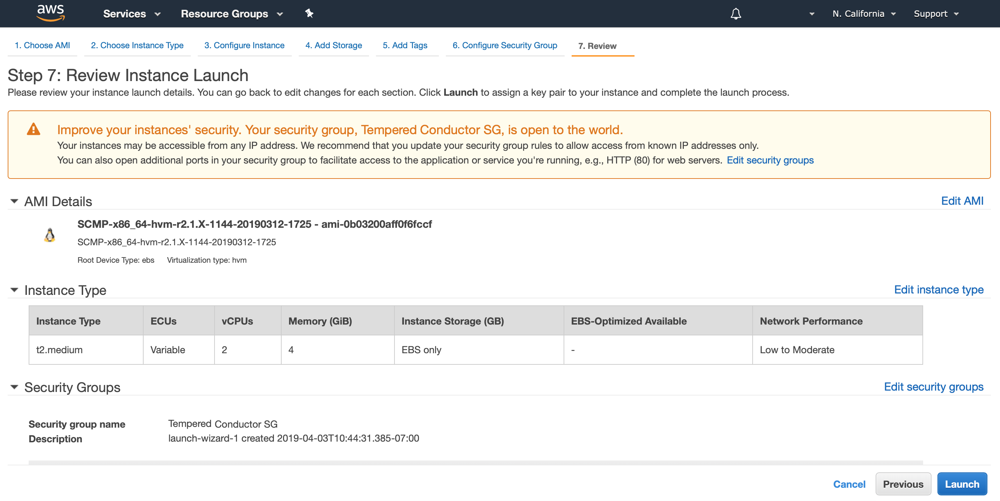

Deploy a Conductor on Amazon Web Services (AWS)
You can deploy an Airwall Conductor on AWS and manage physical, virtual, and cloud Airwall Edge Services, and Airwall Agents. Use the following steps to deploy a Conductor on the AWS platform.
 in the top right to print or download this topic.
in the top right to print or download this topic.Prerequisites
- Access to a Amazon Web Services (AWS) account. If you do not have an account, you can create a free AWS Free Tier account and upgrade it to a full account later.
- Billing information set up on your AWS account. You cannot create a project until you are able to link your billing information to your newly created project.
- A Conductor license voucher if you want to start the Conductor and verify it is set up correctly. Fulfillment will provide this to you in an email after your purchase is complete.
- The Amazon Machine Image (AMI) ID that you received from Tempered Fulfillment when you purchased your AWS Conductor.
Log in to AWS
Create a Launch Instance
When you sign up for Amazon Web Services (AWS), your AWS account is automatically signed up for all services in AWS, including Amazon EC2. You add the Tempered Conductor as an EC2 instance, so make sure you have the AMI ID that you received from Tempered Fulfillment when you purchased your AWS Conductor.
To create an instance:
-
On the top bar of the AWS Management Console, select
Services and then select EC2
to access the EC2 Dashboard.


-
In the Create Instance section, click Launch
Instance.

- Click Launch Instance to start the instance setup wizard.
Step 1: Choose an Amazon Machine Image (AMI)
- On the Choose AMI tab, click My AMIs on the left.
-
Under Ownership, check the Shared with
me box. You should see the Conductor
image listed in the right pane.

- Click the Select button on the right to continue.
Step 2: Choose an Instance Type
-
On the Choose Instance Type tab, select your desired
instance type and click Next: Configure Instance
Details.
Important: DO NOT select the Review and Launch button, as this option will use the default settings for this instance type. You will need to make changes for the Conductor to operate correctly.
- Click Next: Configure Instance Details to continue.
Step 3: Configure Instance Details
-
On the Configure Instance tab, do the following:
- Select your desired VPC from the Network drop-down.
- Select your region from the Subnet drop-down.
- Select Enable termination protection (recommended)
You can leave all other settings as is.

- Click Next: Add Storage to continue.
Step 4: Add Storage
-
On the Add Storage tab, click Add New Volume.
Note: The volume must be a minimum of 32 GB. This size should be sufficient for normal operation; however, you can resize your volume later should you require additional space. See Modifying the Size, Performance, or Type of an EBS Volume in the AWS documentation for more information.
-
Change the following information on the new volume:
You can leave all other settings as is.

- Click Next: Add Tags to continue.
Step 5: Add Tags
-
On the Add Tags tab, click Add
Tag and enter the following:
- Enter Name in the Key column.
- Enter a name for your Conductor in the Value column.

- Click Next: Configure Security Group to continue.
Step 6: Configure Security Group
- In the Assign a security group section, select the Create a new security group radio button.
- In the Security group name field, enter a name for your security group.
- In the Description field, enter a description for your security group, or leave the default.
-
Add three rules to your security group:
- Click Add Rule, select All ICMP – IPv4 from the Type drop-down, select Anywhere from the Source drop-down, and enter ICMP in the Description column.
- Click Add Rule, select HTTPS from the Type drop-down, select Anywhere from the Source drop-down, and enter SSL in the Description column.
- Click Add Rule, select Custom TCP Rule from the Type drop-down, enter 8096 in the Port Range column, select Anywhere from the Source drop-down, and enter MAP in the Description column.

-
Click Review and Launch to continue.
Note: If you receive a Boot from General Purpose (SSD) dialog, select the Continue with Magnetic as the boot volume for this instance radio button and then click Next.
Step 7: Review
-
Review your setup information and if everything is correct, click
Launch.

-
In the Select an existing key pair or create a new key
pair dialog, create a new key pair or enter one of your existing
key pairs.
Note: This keypair is required to complete the wizard, but is never used since SSH is not enabled on Conductors.
- Click Launch Instance.
Verify, Configure, Provision, and License a Cloud Conductor
It may take several minutes for the Conductor to become available after it starts, so if you attempt to access it and your browser appears to stop responding, please try again in a few minutes.
- Alibaba Cloud – Tnw-<instanceID>
- Amazon Web Services – Tnw-<instanceID>
- Microsoft Azure – Tnw-<privateIpOfPublicNic>
- Google Cloud – Tnw-<instanceID>
Additional Information
Once your Conductor is installed, you can configure and manage it as you would a physical Conductor. See Configure a Conductor. For additional help, you can search Airwall help by using the search bar at the top of the page or the navigation links to the left.